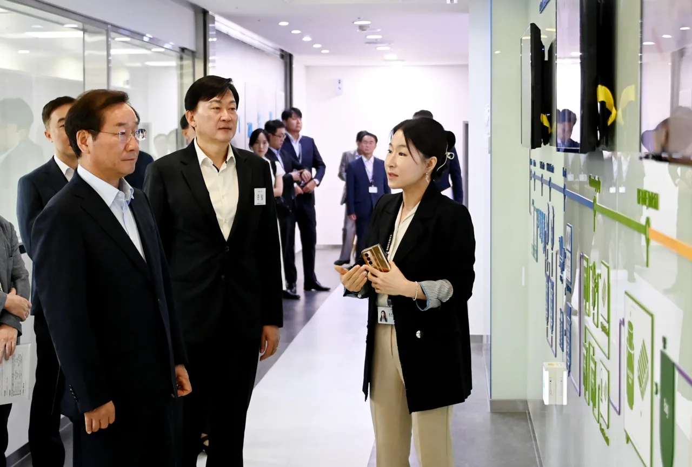

바이오 CDMO 테마는 공장 증설 뉴스가 크게 보입니다. 하지만 투자자가 봐야 할 것은 공장 크기보다 그 공장이 얼마나 빨리, 얼마나 높은 가격으로 채워지는지입니다. 장기 위탁생산 계약과 가동률, 품질 인증이 실적을 좌우합니다.
CDMO는 고객사의 신약 개발 일정과 규제 승인에 묶여 있습니다. 임상 성공이 늦어지면 상업 생산도 늦어지고, 고객의 제품 포트폴리오가 바뀌면 생산 슬롯의 가치도 달라집니다. 그래서 공장 증설은 기회이면서 동시에 고정비 부담입니다.
투자자는 바이오 CDMO를 단순 바이오 테마가 아니라 제조 서비스 기업으로 봐야 합니다. 기술 신뢰, 규제 대응, 장기 계약, 가동률, 현금흐름이 함께 맞아야 높은 밸류에이션이 유지됩니다.
증설은 예약률이 있어야 합니다

새 공장이 완공돼도 고객 계약이 채워지지 않으면 감가상각 부담이 먼저 옵니다.
장기 계약과 선주문은 증설 리스크를 줄이는 핵심입니다.
가동률이 올라가는 속도가 매출 성장보다 더 중요한 구간이 있습니다.
이 대목에서는 숫자 하나를 따로 떼어 보지 않는 편이 좋습니다. 새 공장이 완공돼도 고객 계약이 채워지지 않으면 감가상각 부담이 먼저 옵니다. 장기 계약과 선주문은 증설 리스크를 줄이는 핵심입니다. 가동률이 올라가는 속도가 매출 성장보다 더 중요한 구간이 있습니다. 이 흐름이 다음 분기에도 이어지는지 확인하면 뉴스의 크기와 실제 투자 가치 사이의 간격을 줄일 수 있습니다.
품질 인증이 진입장벽입니다
관련 영상
바이오 CDMO 산업과 수주 구조를 설명하는 영상
의약품 생산은 규제기관의 품질 검증이 중요합니다.
한 번 신뢰를 얻은 생산 파트너는 고객이 쉽게 바꾸기 어렵습니다.
반대로 품질 이슈는 장기 계약의 프리미엄을 빠르게 훼손할 수 있습니다.
이 대목에서는 숫자 하나를 따로 떼어 보지 않는 편이 좋습니다. 의약품 생산은 규제기관의 품질 검증이 중요합니다. 한 번 신뢰를 얻은 생산 파트너는 고객이 쉽게 바꾸기 어렵습니다. 반대로 품질 이슈는 장기 계약의 프리미엄을 빠르게 훼손할 수 있습니다. 이 흐름이 다음 분기에도 이어지는지 확인하면 뉴스의 크기와 실제 투자 가치 사이의 간격을 줄일 수 있습니다.
고객 파이프라인을 읽습니다
CDMO 매출은 고객사의 임상 성공과 상업화 일정에 연결됩니다.
대형 제약사의 블록버스터 후보가 있으면 장기 생산 수요가 커질 수 있습니다.
고객 집중도가 높으면 한 제품의 지연이 실적 변동으로 이어집니다.
고객 파이프라인을 읽습니다을 볼 때는 숫자 하나를 따로 떼어 보지 않는 편이 좋습니다. CDMO 매출은 고객사의 임상 성공과 상업화 일정에 연결됩니다. 대형 제약사의 블록버스터 후보가 있으면 장기 생산 수요가 커질 수 있습니다. 고객 집중도가 높으면 한 제품의 지연이 실적 변동으로 이어집니다. 이 흐름이 다음 분기에도 이어지는지 확인하면 뉴스의 크기와 실제 투자 가치 사이의 간격을 줄일 수 있습니다.
마진은 공정 난도에서 나옵니다
복잡한 바이오의약품일수록 생산 난도와 가격 결정력이 높아질 수 있습니다.
단순 생산 슬롯 경쟁이 심해지면 단가 압력이 생깁니다.
항체, 세포치료제, mRNA 등 공정별 수익성 차이를 구분해야 합니다.
마진은 공정 난도에서 나옵니다을 볼 때는 숫자 하나를 따로 떼어 보지 않는 편이 좋습니다. 복잡한 바이오의약품일수록 생산 난도와 가격 결정력이 높아질 수 있습니다. 단순 생산 슬롯 경쟁이 심해지면 단가 압력이 생깁니다. 항체, 세포치료제, mRNA 등 공정별 수익성 차이를 구분해야 합니다. 이 흐름이 다음 분기에도 이어지는지 확인하면 뉴스의 크기와 실제 투자 가치 사이의 간격을 줄일 수 있습니다.
현금흐름은 후행합니다
대규모 공장은 먼저 돈을 쓰고 나중에 매출을 냅니다.
증설 직후에는 이익률보다 운전자본과 감가상각 부담을 봐야 합니다.
좋은 CDMO 투자는 공장 완공보다 계약과 가동률의 곡선을 확인하는 일입니다.
이 대목에서는 숫자 하나를 따로 떼어 보지 않는 편이 좋습니다. 대규모 공장은 먼저 돈을 쓰고 나중에 매출을 냅니다. 증설 직후에는 이익률보다 운전자본과 감가상각 부담을 봐야 합니다. 좋은 CDMO 투자는 공장 완공보다 계약과 가동률의 곡선을 확인하는 일입니다. 이 흐름이 다음 분기에도 이어지는지 확인하면 뉴스의 크기와 실제 투자 가치 사이의 간격을 줄일 수 있습니다.
바이오 CDMO의 매력은 장기 계약과 높은 전환 비용입니다. 하지만 공장이 커질수록 빈 공장의 부담도 커집니다. 투자자는 증설 면적보다 예약률, 고객 구성, 품질 인증, 가동률 상승 속도를 확인해야 합니다.
다음 실적에서는 신규 수주, 누적 수주잔고, 공장별 가동률, 감가상각 부담, 고객사 임상 일정을 함께 봐야 합니다. CDMO 테마는 연구개발보다 제조 실행력이 주가를 설득하는 산업입니다.
산업 테마는 스토리가 빠르게 퍼지는 만큼 숫자로 확인하는 과정이 필요합니다. 수주잔고, 납품 일정, 가동률, 가격 전가력, 운전자본을 확인하면 테마가 실제 매출과 현금으로 바뀌는 속도를 가늠할 수 있습니다.
한 기업이 테마 이름을 달고 있다는 이유만으로 같은 수혜를 받지는 않습니다. 병목을 해결하는 기업인지, 단순히 비용을 부담하는 기업인지 구분해야 합니다.
마지막으로 헬스케어·바이오테크 글을 읽을 때는 가격이 먼저 움직인 뒤 이유가 붙는 경우가 많다는 점을 기억해야 합니다. 투자자는 결론을 서둘러 정하기보다 공식 자료, 최근 실적, 현금흐름, 밸류에이션, 시장 기대가 서로 같은 방향인지 차분히 확인하는 편이 좋습니다.
산업 테마는 스토리가 빠르게 퍼지는 만큼 숫자로 확인하는 과정이 필요합니다. 수주잔고, 납품 일정, 가동률, 가격 전가력, 운전자본을 확인하면 테마가 실제 매출과 현금으로 바뀌는 속도를 가늠할 수 있습니다.
한 기업이 테마 이름을 달고 있다는 이유만으로 같은 수혜를 받지는 않습니다. 병목을 해결하는 기업인지, 단순히 비용을 부담하는 기업인지 구분해야 합니다.
마지막으로 투자 글을 읽을 때는 가격이 먼저 움직인 뒤 이유가 붙는 경우가 많다는 점을 기억해야 합니다. 투자자는 결론을 서둘러 정하기보다 공식 자료, 최근 실적, 현금흐름, 밸류에이션, 시장 기대가 서로 같은 방향인지 차분히 확인하는 편이 좋습니다.
이 글의 목적은 정답을 대신 내려 주는 것이 아니라 확인 순서를 줄이는 데 있습니다. 관심 종목이나 상품이 있다면 같은 기준을 표로 옮겨 적고, 다음 실적 발표 때 실제 숫자가 어떻게 변했는지 다시 비교해 보는 방식이 가장 안전합니다.
바오 CDMO 테마 공장 증설보다 장기 수주와 동률 핵심입니다을 다시 점검할 때는 한 번의 뉴스보다 여러 분기의 방향이 중요합니다. 숫자가 좋아지는 이유가 가격인지 물량인지, 비용 절감인지 일회성인지 나누어 보면 기대와 현실의 차이를 더 빨리 알아차릴 수 있습니다.
바오 CDMO 테마 공장 증설보다 장기 수주와 동률 핵심입니다을 다시 점검할 때는 한 번의 뉴스보다 여러 분기의 방향이 중요합니다. 숫자가 좋아지는 이유가 가격인지 물량인지, 비용 절감인지 일회성인지 나누어 보면 기대와 현실의 차이를 더 빨리 알아차릴 수 있습니다.
헬스케어·바이오테크 투자는 이야기가 먼저 퍼지고 숫자가 나중에 확인되는 경우가 많습니다. 그래서 테마에 올라탄 기업이 실제로 어떤 계약을 가졌는지, 매출 인식은 언제 되는지, 원가 상승을 가격에 반영할 수 있는지 따로 확인해야 합니다.
수주잔고가 크다는 말도 충분하지 않습니다. 납품 일정, 선급금, 생산 능력, 협력사 품질, 환율 조건에 따라 같은 수주잔고의 가치는 크게 달라집니다. 투자자는 수주와 현금 회수 사이의 거리를 줄여서 봐야 합니다.
테마가 뜨거울수록 비중 관리는 더 중요합니다. 장기 성장성이 좋아도 주가가 먼저 달리면 다음 실적이 기대를 따라가지 못할 수 있습니다. 테마 이름보다 실적 연결 속도를 기준으로 삼아야 합니다.
또 하나 중요한 점은 기록입니다. 관심 있는 종목이나 상품을 볼 때 오늘의 판단 근거를 짧게 남겨 두면 다음 실적 발표나 시장 변화가 왔을 때 생각이 어떻게 달라졌는지 확인할 수 있습니다. 이 기록은 매수와 매도보다 먼저 투자 습관을 안정시키며, 같은 실수를 반복하지 않게 도와줍니다.
작은 차이를 확인하는 습관이 쌓이면 같은 뉴스에서도 더 침착하게 판단할 수 있습니다.